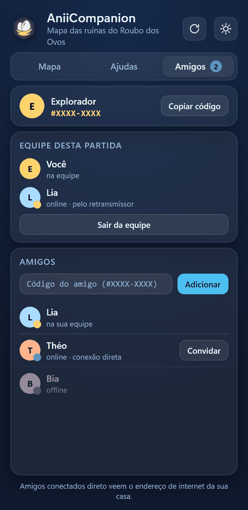
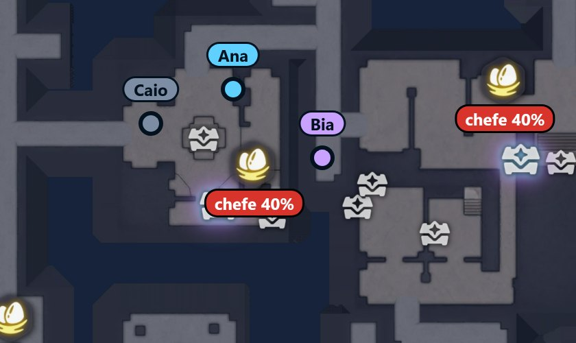

Jogar em equipe
Veja os amigos no mapa e some o que cada um acha.
O que muda
O que a equipe compartilha
Quem joga junto se vê no mapa e soma o que cada um acha.
- Os amigos no mapaCada amigo é um ponto com o nome, em tempo real.
- Ninhos e ovosO ninho que um olhou de perto fica cinza para os dois. O ovo largado aparece no mapa do outro.
- Baús abertosO baú raro que o amigo abre ganha ✓ no seu mapa.
- Salas ricas e PrismanaCada baú que o amigo abre ajuda o app a descobrir mais.
Você troca um código curto com o amigo, e pronto.
Só na primeira vez
Como adiciono um amigo?
Os dois precisam estar com o AniiCompanion aberto.
- Ache o seu códigoNa aba “Amigos”, no alto, no formato #XXXX-XXXX. Toque em “Copiar código”.
- Troque os códigosMande o seu por WhatsApp ou Discord e peça o dele. Quem recebe cola no campo “Código do amigo (#XXXX-XXXX)” e toca em “Adicionar”.
- Espere o pedido chegarO app avisa: “Pedido enviado. Ele precisa estar com o AniiCompanion aberto (o pedido vale por 2 minutos).”No app do amigo aparece “quer ser seu amigo”, com “Aceitar” e “Recusar”.
- Confira os 3 desenhosOs dois apps mostram “Você e … agora são amigos” e 3 desenhos, cada um com uma palavra embaixo. Confirme com o amigo, numa conversa (no WhatsApp, por exemplo), que os desenhos são iguais, mesmo que o app dele esteja em outro idioma. Isso garante que ninguém se passou por ele.Iguais: toque em “São iguais”. Diferentes: toque em “São diferentes”, porque alguém pode estar no meio. O app avisa: “Amizade desfeita: as palavras não bateram. Peça o código de novo ao seu amigo.”

Identificação
Seu nome no jogo
É o nome que o amigo vê ao lado do seu ponto.
- Pelo menu EscCom o AniiCompanion aberto, abra o menu do jogo com Esc por uns segundos. O app lê o seu nome ali e pergunta “Seu nome no jogo é …?”. Toque em “Usar”.
- À mãoNo alto da aba Amigos, escreva no campo “Seu nome no jogo”, com até 24 letras.
A cada partida
Como chamo o amigo para a equipe?
Só quem está na equipe aparece no mapa.
- Veja se ele está on-lineNa lista “Amigos”, a linha dele diz “on-line · conexão direta” ou “on-line · pelo retransmissor”. Os dois funcionam. “off-line” quer dizer que o app dele está fechado.
- Toque em “Convidar”O botão fica na linha dele.
- O amigo toca em “Entrar”Aparece “chamou você para a equipe” no app dele. Depois, o quadro “Aliados da partida” mostra vocês dois, com “na equipe” embaixo de cada nome. Enquanto você está só, ele diz “sozinho por enquanto”. Para sair, toque em “Sair da equipe”.
A posição e os ninhos da equipe começam do zero a cada partida.
Versão
Versão mínima
Para trocar ninhos e ovos, os dois precisam dessa versão. O app avisa quando há uma nova, com “Nova versão 0.2.11 · Atualizar”. Como atualizar
Privacidade
O que os outros veem de você
Amigos conectados direto veem o endereço de internet (IP) da sua casa. Os servidores públicos de encontro veem o IP e o horário, mas não o conteúdo, que vai cifrado.
No mapa
Como o amigo aparece no seu mapa
Você aparece no mapa dele do mesmo jeito.

- Ponto azul com o nome: o seu amigo, em tempo real.
- Ponto lilás: um segundo amigo na equipe usa outra cor.
- Ponto cinza: mais de 15 segundos sem posição, porque ele saiu do santuário ou perdeu a conexão. Fica onde ele estava.
- Seta na borda: o amigo está fora da parte visível e ela aponta para ele.
Ninhos olhados de perto, ovos largados no chão e baús abertos pelo amigo também entram no seu mapa.